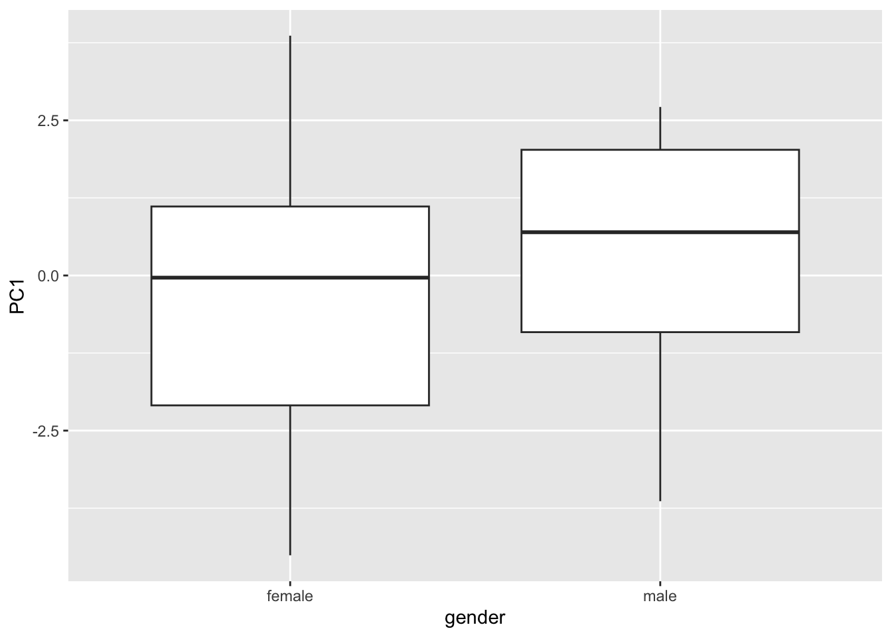

library(EFAtools)
library(ggplot2)
library(ggfortify)1 PCA and Factor Analysis
Students in class gave “Characteristics of a good ecology lecturer”. They scored from 1-10 on a range of characteristics:
- accessible
- attractive
- Wide range of topics
- Do teaching research
- Dress well
- Complex issues
- Example exam questions
- Notes before
- humour
- Easy marking
- Move around lecture
- Detailed lecture notes
- Clear objective to lecture
- Solicit questions
- Use textbook closely
- Focus on primary research
- Use their own research
- Teach in team
- Understand principles of teaching
- Use pointers
- respected
The students also indicated whether they were:
- a gender (male/female)
- studied mainly a system (marine/terrestrial)
- studied mainly an organismal group (plants/animals)
We are going to use principal components analysis and factor analysis to interpret this dataset.
1.1 Setup
Load these packages to make the plots look better:
1.2 Load the data
First open your dataset:
lecturers <- read.csv("data/lecturers.csv", header = TRUE)1.3 Correlation matrix
Let’s first do a correlation matrix:
cor(lecturers[, 8:28]) accessible attractive wide_range
accessible 1.00000000 -0.61876084 0.190062066
attractive -0.61876084 1.00000000 -0.011570169
wide_range 0.19006207 -0.01157017 1.000000000
teaching.based_research 0.24021638 -0.21382943 0.462870058
Dress_nicely -0.53198037 0.81887024 -0.022848836
focus_on_complex_issues 0.28252341 -0.04447540 0.567443460
gives_example -0.23669223 0.23435837 0.065815857
gives_out_note -0.31173854 0.36819405 -0.187661524
sense_of_humour -0.29068273 0.33747896 0.081503385
mark_easily -0.34976811 0.44361281 -0.158545138
moves_around -0.23371225 0.18475768 -0.087292839
offers_lecture_notes -0.25762452 0.28256570 -0.070931605
clear_objective -0.21819811 0.14978520 -0.176518448
solicit_questions 0.10349600 -0.07667948 -0.022123679
text_book 0.03170769 0.02849978 -0.241108100
primary_research 0.14147306 -0.06238516 -0.009628388
own_research -0.01089281 0.15175696 0.157013029
teach_in_team 0.09004589 -0.13904104 0.005163136
understand_principles -0.08521319 -0.01080764 -0.097173242
use_a_pointer -0.51717009 0.25526667 -0.131935123
well_respected -0.12789662 0.04222022 0.037698097
teaching.based_research Dress_nicely
accessible 0.24021638 -0.531980374
attractive -0.21382943 0.818870242
wide_range 0.46287006 -0.022848836
teaching.based_research 1.00000000 -0.079662581
Dress_nicely -0.07966258 1.000000000
focus_on_complex_issues 0.36612054 -0.074522662
gives_example -0.23626944 0.207509283
gives_out_note -0.13154529 0.349298764
sense_of_humour -0.37115541 0.326981372
mark_easily -0.26802282 0.293513890
moves_around 0.35915941 0.175612992
offers_lecture_notes -0.26062206 0.304730151
clear_objective -0.10137698 0.162176313
solicit_questions 0.06997014 -0.047353486
text_book -0.02511112 0.065661794
primary_research 0.08627931 -0.125765210
own_research 0.24450347 0.131114596
teach_in_team 0.05621459 -0.081891992
understand_principles 0.13360929 0.003830791
use_a_pointer -0.40503932 0.246189390
well_respected -0.21574299 0.082434616
focus_on_complex_issues gives_example gives_out_note
accessible 0.28252341 -0.23669223 -0.31173854
attractive -0.04447540 0.23435837 0.36819405
wide_range 0.56744346 0.06581586 -0.18766152
teaching.based_research 0.36612054 -0.23626944 -0.13154529
Dress_nicely -0.07452266 0.20750928 0.34929876
focus_on_complex_issues 1.00000000 -0.15606162 -0.31138949
gives_example -0.15606162 1.00000000 0.41459959
gives_out_note -0.31138949 0.41459959 1.00000000
sense_of_humour -0.07005663 0.22759892 0.25028755
mark_easily -0.18475242 0.18880641 0.39259669
moves_around 0.06116819 -0.15496603 0.26746010
offers_lecture_notes 0.04438636 0.67139954 0.32650197
clear_objective -0.05740760 0.22152350 0.49329825
solicit_questions 0.12547982 -0.10034117 0.37306647
text_book -0.14904151 0.23189356 0.41705241
primary_research 0.33824172 -0.05502391 -0.00258233
own_research 0.21007669 -0.03858742 0.11486585
teach_in_team -0.05016868 0.22073735 0.07101795
understand_principles 0.12582565 0.06367067 0.09564742
use_a_pointer -0.19722690 0.29421612 0.42798936
well_respected -0.15321258 0.20022401 0.24197769
sense_of_humour mark_easily moves_around
accessible -0.29068273 -0.349768108 -0.233712249
attractive 0.33747896 0.443612809 0.184757685
wide_range 0.08150339 -0.158545138 -0.087292839
teaching.based_research -0.37115541 -0.268022817 0.359159406
Dress_nicely 0.32698137 0.293513890 0.175612992
focus_on_complex_issues -0.07005663 -0.184752419 0.061168190
gives_example 0.22759892 0.188806413 -0.154966026
gives_out_note 0.25028755 0.392596691 0.267460102
sense_of_humour 1.00000000 0.279195853 0.147981262
mark_easily 0.27919585 1.000000000 -0.102624026
moves_around 0.14798126 -0.102624026 1.000000000
offers_lecture_notes 0.40350521 0.004540766 0.116586008
clear_objective 0.30494267 0.241714172 0.328029643
solicit_questions 0.22196924 0.221507736 0.357039548
text_book 0.11515826 0.493885950 0.018944976
primary_research -0.11402253 0.013988221 0.201361759
own_research 0.19400676 -0.136905883 0.521788320
teach_in_team -0.13889755 -0.029214646 -0.002012914
understand_principles 0.08973153 0.029511600 0.281044416
use_a_pointer 0.60147995 0.200483903 0.247735287
well_respected 0.31777004 0.204840208 0.107275533
offers_lecture_notes clear_objective solicit_questions
accessible -0.257624516 -0.21819811 0.103495996
attractive 0.282565698 0.14978520 -0.076679483
wide_range -0.070931605 -0.17651845 -0.022123679
teaching.based_research -0.260622062 -0.10137698 0.069970142
Dress_nicely 0.304730151 0.16217631 -0.047353486
focus_on_complex_issues 0.044386363 -0.05740760 0.125479819
gives_example 0.671399539 0.22152350 -0.100341166
gives_out_note 0.326501972 0.49329825 0.373066471
sense_of_humour 0.403505211 0.30494267 0.221969236
mark_easily 0.004540766 0.24171417 0.221507736
moves_around 0.116586008 0.32802964 0.357039548
offers_lecture_notes 1.000000000 0.51135418 0.134906607
clear_objective 0.511354179 1.00000000 0.667857876
solicit_questions 0.134906607 0.66785788 1.000000000
text_book 0.241763186 0.50985104 0.514856144
primary_research 0.027238866 -0.05933422 0.008953955
own_research 0.014724611 0.04037952 0.313649567
teach_in_team 0.134589361 0.09431599 0.129502715
understand_principles 0.204933977 0.52773521 0.525180942
use_a_pointer 0.475656687 0.48740938 0.245720968
well_respected 0.173541917 0.20806935 0.217669413
text_book primary_research own_research
accessible 0.031707686 0.141473062 -0.01089281
attractive 0.028499784 -0.062385161 0.15175696
wide_range -0.241108100 -0.009628388 0.15701303
teaching.based_research -0.025111119 0.086279306 0.24450347
Dress_nicely 0.065661794 -0.125765210 0.13111460
focus_on_complex_issues -0.149041509 0.338241715 0.21007669
gives_example 0.231893556 -0.055023907 -0.03858742
gives_out_note 0.417052411 -0.002582330 0.11486585
sense_of_humour 0.115158256 -0.114022533 0.19400676
mark_easily 0.493885950 0.013988221 -0.13690588
moves_around 0.018944976 0.201361759 0.52178832
offers_lecture_notes 0.241763186 0.027238866 0.01472461
clear_objective 0.509851042 -0.059334220 0.04037952
solicit_questions 0.514856144 0.008953955 0.31364957
text_book 1.000000000 -0.092231864 -0.11384268
primary_research -0.092231864 1.000000000 0.35299282
own_research -0.113842676 0.352992824 1.00000000
teach_in_team 0.176402014 -0.085933891 -0.08668898
understand_principles 0.287773155 0.017218953 0.06370238
use_a_pointer 0.001337384 -0.149851010 0.15399945
well_respected 0.274222528 0.016210854 -0.10140227
teach_in_team understand_principles use_a_pointer
accessible 0.090045886 -0.085213191 -0.517170092
attractive -0.139041035 -0.010807636 0.255266673
wide_range 0.005163136 -0.097173242 -0.131935123
teaching.based_research 0.056214590 0.133609295 -0.405039321
Dress_nicely -0.081891992 0.003830791 0.246189390
focus_on_complex_issues -0.050168682 0.125825652 -0.197226905
gives_example 0.220737347 0.063670673 0.294216117
gives_out_note 0.071017950 0.095647419 0.427989355
sense_of_humour -0.138897546 0.089731525 0.601479950
mark_easily -0.029214646 0.029511600 0.200483903
moves_around -0.002012914 0.281044416 0.247735287
offers_lecture_notes 0.134589361 0.204933977 0.475656687
clear_objective 0.094315990 0.527735214 0.487409381
solicit_questions 0.129502715 0.525180942 0.245720968
text_book 0.176402014 0.287773155 0.001337384
primary_research -0.085933891 0.017218953 -0.149851010
own_research -0.086688981 0.063702380 0.153999453
teach_in_team 1.000000000 0.101857142 -0.016777680
understand_principles 0.101857142 1.000000000 0.104631048
use_a_pointer -0.016777680 0.104631048 1.000000000
well_respected 0.545915684 0.207782811 0.318541502
well_respected
accessible -0.12789662
attractive 0.04222022
wide_range 0.03769810
teaching.based_research -0.21574299
Dress_nicely 0.08243462
focus_on_complex_issues -0.15321258
gives_example 0.20022401
gives_out_note 0.24197769
sense_of_humour 0.31777004
mark_easily 0.20484021
moves_around 0.10727553
offers_lecture_notes 0.17354192
clear_objective 0.20806935
solicit_questions 0.21766941
text_book 0.27422253
primary_research 0.01621085
own_research -0.10140227
teach_in_team 0.54591568
understand_principles 0.20778281
use_a_pointer 0.31854150
well_respected 1.00000000Corrmatrix <- cor(lecturers[, 8:28])1.4 Bartlett’s Test of Sphericity
Now we can do the Bartlett’s Test of Sphericity. This test compares the correlation matrix to an identity matrix. If it is significant, it is worth doing a PCA.
BARTLETT(Corrmatrix, N = 34, cor_method = c("pearson"))
✔ The Bartlett's test of sphericity was significant at an alpha level of .05.
These data are probably suitable for factor analysis.
𝜒²(210) = 355.07, p < .0011.5 Principal Components Analysis
Note: to make this a PCA based on a correlation matrix, we have to scale the variables, hence scale = TRUE. There are two main principal components functions, but they are very similar. Note prcomp calls the loadings “rotations”, not to be confused with rotations below.
pca1 <- prcomp(lecturers[, 8:28], scale = TRUE)
pca2 <- princomp(lecturers[, 8:28], cor = TRUE)summary(pca1)Importance of components:
PC1 PC2 PC3 PC4 PC5 PC6 PC7
Standard deviation 2.2206 1.6616 1.5324 1.29807 1.19561 1.12098 1.08311
Proportion of Variance 0.2348 0.1315 0.1118 0.08024 0.06807 0.05984 0.05586
Cumulative Proportion 0.2348 0.3663 0.4781 0.55833 0.62641 0.68624 0.74211
PC8 PC9 PC10 PC11 PC12 PC13 PC14
Standard deviation 1.0737 0.95681 0.79545 0.73119 0.7055 0.65580 0.50887
Proportion of Variance 0.0549 0.04359 0.03013 0.02546 0.0237 0.02048 0.01233
Cumulative Proportion 0.7970 0.84060 0.87073 0.89619 0.9199 0.94037 0.95270
PC15 PC16 PC17 PC18 PC19 PC20 PC21
Standard deviation 0.49817 0.47309 0.42640 0.36970 0.32493 0.24020 0.19872
Proportion of Variance 0.01182 0.01066 0.00866 0.00651 0.00503 0.00275 0.00188
Cumulative Proportion 0.96452 0.97518 0.98384 0.99034 0.99537 0.99812 1.00000summary(pca2)Importance of components:
Comp.1 Comp.2 Comp.3 Comp.4 Comp.5
Standard deviation 2.2205654 1.6615887 1.5324030 1.29806969 1.19560985
Proportion of Variance 0.2348053 0.1314703 0.1118219 0.08023738 0.06807062
Cumulative Proportion 0.2348053 0.3662756 0.4780975 0.55833484 0.62640546
Comp.6 Comp.7 Comp.8 Comp.9 Comp.10
Standard deviation 1.12097809 1.08311410 1.07371597 0.95680927 0.79544930
Proportion of Variance 0.05983771 0.05586363 0.05489838 0.04359448 0.03013046
Cumulative Proportion 0.68624317 0.74210679 0.79700517 0.84059965 0.87073010
Comp.11 Comp.12 Comp.13 Comp.14 Comp.15
Standard deviation 0.73119377 0.70551609 0.65579857 0.50886890 0.49817027
Proportion of Variance 0.02545925 0.02370252 0.02047961 0.01233084 0.01181779
Cumulative Proportion 0.89618936 0.91989188 0.94037149 0.95270232 0.96452011
Comp.16 Comp.17 Comp.18 Comp.19
Standard deviation 0.4730918 0.426395520 0.369702631 0.324933440
Proportion of Variance 0.0106579 0.008657769 0.006508573 0.005027702
Cumulative Proportion 0.9751780 0.983835781 0.990344355 0.995372057
Comp.20 Comp.21
Standard deviation 0.240198751 0.198724365
Proportion of Variance 0.002747402 0.001880542
Cumulative Proportion 0.998119458 1.0000000001.6 Loadings
Let’s look at the loadings. Called “rotations” in prcomp and “loadings” in princomp. They are the Pearson’s correlation between that variable and that Principal Component.
pca1Standard deviations (1, .., p=21):
[1] 2.2205654 1.6615887 1.5324030 1.2980697 1.1956099 1.1209781 1.0831141
[8] 1.0737160 0.9568093 0.7954493 0.7311938 0.7055161 0.6557986 0.5088689
[15] 0.4981703 0.4730918 0.4263955 0.3697026 0.3249334 0.2401988 0.1987244
Rotation (n x k) = (21 x 21):
PC1 PC2 PC3 PC4
accessible -0.27105784 0.21481141 0.22284903 -0.109380126
attractive 0.25953819 -0.19001404 -0.35322829 0.047967149
wide_range -0.11796047 0.14523503 -0.23536689 -0.465316942
teaching.based_research -0.17807186 0.33523672 -0.16973235 -0.005540905
Dress_nicely 0.24737662 -0.15550598 -0.32565089 0.019172145
focus_on_complex_issues -0.13467331 0.28837561 -0.24412817 -0.297540766
gives_example 0.22797978 -0.11739164 0.06984178 -0.437201342
gives_out_note 0.32056620 0.04438472 0.02749136 0.100499687
sense_of_humour 0.27564472 -0.03120757 -0.13957405 -0.145704311
mark_easily 0.23686285 -0.11243202 0.08113616 0.196601185
moves_around 0.13236700 0.32827473 -0.27087444 0.213497862
offers_lecture_notes 0.28307512 0.02357872 -0.01627849 -0.372830743
clear_objective 0.31573398 0.26378859 0.12826236 0.066194937
solicit_questions 0.18991164 0.43659484 0.13380240 0.160366349
text_book 0.21299001 0.16712512 0.33485831 0.124899445
primary_research -0.05608411 0.19206706 -0.16387602 0.001745603
own_research 0.04318371 0.28387549 -0.37836892 0.056442158
teach_in_team 0.04818137 0.11021896 0.29523823 -0.327405642
understand_principles 0.14556568 0.33936721 0.10777339 0.053017840
use_a_pointer 0.32019196 -0.03811643 -0.08101559 -0.080227102
well_respected 0.19384039 0.06977679 0.22029921 -0.263146206
PC5 PC6 PC7 PC8
accessible -0.006862732 0.20175545 0.075192964 0.13471983
attractive -0.304217305 -0.05278985 -0.006014137 -0.01346850
wide_range -0.251311171 0.08634713 -0.331523146 0.07096692
teaching.based_research -0.307853355 -0.22290900 -0.040540304 -0.27328747
Dress_nicely -0.299180706 -0.12573075 -0.046516486 -0.12380132
focus_on_complex_issues -0.170654964 0.29340602 -0.050872762 0.07474147
gives_example -0.075647764 0.06855598 0.364935010 -0.17131172
gives_out_note -0.125013318 -0.08366732 0.223406707 0.02145305
sense_of_humour 0.216056466 0.21464296 -0.328598912 0.27397871
mark_easily -0.421810061 0.15983061 -0.046406386 0.38018642
moves_around 0.166526391 -0.35024271 0.055092321 -0.07707096
offers_lecture_notes 0.146235397 0.18757528 0.287000528 -0.27400475
clear_objective 0.060342195 0.17777324 -0.032682046 -0.21837583
solicit_questions -0.005900941 0.14588578 -0.182965113 0.09074671
text_book -0.356204508 0.15361788 0.084096939 0.02338965
primary_research 0.039054189 0.06897414 0.592731543 0.45913721
own_research 0.156844077 -0.09496398 0.160942737 0.20826388
teach_in_team -0.096207102 -0.54758870 0.037625674 0.05473642
understand_principles 0.010243773 0.05372028 -0.114475017 -0.27603888
use_a_pointer 0.411769112 0.01616452 -0.180288938 0.05917537
well_respected 0.013159486 -0.40377696 -0.183055505 0.39655405
PC9 PC10 PC11 PC12
accessible 0.23711499 0.41979852 0.03945146 0.148881566
attractive -0.16438427 0.20365082 0.06904042 -0.107432225
wide_range 0.22155409 -0.26438749 -0.03259079 -0.018048262
teaching.based_research 0.19889412 -0.24510749 -0.11135378 0.247899071
Dress_nicely -0.10406494 0.38639604 0.08377430 0.098387712
focus_on_complex_issues -0.28979913 0.00432150 0.36226348 -0.066562002
gives_example 0.19510676 -0.15342441 -0.35973985 -0.159175284
gives_out_note 0.41895610 -0.21289394 0.20038838 0.006019332
sense_of_humour 0.09730489 0.19787809 -0.29410062 0.309619454
mark_easily -0.04288340 -0.25885827 -0.05713892 -0.143735223
moves_around 0.02114182 -0.04788447 0.02682634 0.353171999
offers_lecture_notes -0.07931457 0.16874959 0.11255136 0.207814735
clear_objective -0.04989256 -0.08180409 0.29595319 0.009127372
solicit_questions 0.10754501 0.13028684 0.14132328 -0.276862219
text_book 0.12628767 0.17521009 -0.12180066 0.267854799
primary_research -0.30348754 -0.18921946 0.01954047 0.138689169
own_research 0.28543090 0.27973695 -0.29907250 -0.427500246
teach_in_team -0.07446630 0.20427502 0.21413563 -0.322896702
understand_principles -0.49690454 -0.08895650 -0.50033599 -0.189676003
use_a_pointer 0.09757553 -0.27912944 0.22992547 -0.115886008
well_respected -0.19000184 -0.03498965 -0.08926599 0.276488059
PC13 PC14 PC15 PC16
accessible 0.29231904 0.29580819 -0.222218786 0.095682695
attractive 0.10512874 0.20004636 0.069413634 -0.326657310
wide_range 0.14339377 -0.15578216 -0.042633744 -0.346118318
teaching.based_research -0.16129758 -0.08569727 -0.291561886 0.304862272
Dress_nicely 0.22024728 -0.29025496 -0.196064822 0.331319175
focus_on_complex_issues -0.11651678 0.21121417 0.380088085 0.275036237
gives_example -0.02596566 0.13003779 0.073844050 -0.048615414
gives_out_note 0.52366782 0.22815294 0.150396690 0.187752138
sense_of_humour -0.09102492 0.24787583 -0.269328590 0.077361879
mark_easily -0.30618081 0.26528469 -0.239118638 0.067806707
moves_around -0.19413727 0.41519824 0.163481854 -0.233951595
offers_lecture_notes -0.18626080 -0.01943147 -0.008128194 -0.028997162
clear_objective 0.02299500 -0.21161788 -0.392005665 -0.377275931
solicit_questions 0.07959209 -0.06601352 0.067535709 -0.098815936
text_book -0.31596633 -0.28217199 0.346092878 0.063696048
primary_research 0.11269387 -0.18656539 -0.263215477 -0.012502540
own_research -0.14671997 -0.23213427 0.082887276 0.001508984
teach_in_team -0.23420220 0.19002827 -0.271548974 0.056217287
understand_principles 0.29771815 0.14826763 -0.020146024 0.175848894
use_a_pointer -0.10543967 -0.11603812 -0.008762183 0.433779829
well_respected 0.22357927 -0.22236358 0.251201419 -0.060389007
PC17 PC18 PC19 PC20
accessible -0.487523780 -0.092943639 0.11623660 -0.08184741
attractive -0.106937105 -0.195239242 0.45086924 -0.09762660
wide_range 0.009616636 0.068156323 0.05963088 -0.34244915
teaching.based_research 0.006376281 0.018683190 0.22919635 0.23688191
Dress_nicely -0.124236446 0.174946567 -0.38290347 -0.11111538
focus_on_complex_issues 0.057689702 -0.197551507 -0.21480326 0.19658872
gives_example -0.206970055 0.030539850 -0.40647428 -0.01600380
gives_out_note 0.321857496 -0.107588372 0.08121002 0.10250939
sense_of_humour 0.430141107 -0.113398698 -0.08853507 0.02641527
mark_easily -0.269651092 0.167631153 0.01976224 0.19779113
moves_around -0.207902119 0.101506396 -0.24054414 -0.20539739
offers_lecture_notes 0.024256519 0.371837654 0.41986631 0.20173823
clear_objective -0.097333800 -0.419634434 -0.21848656 0.23314508
solicit_questions 0.094290088 0.606166863 -0.05758082 -0.04550053
text_book 0.072364215 -0.254638772 0.07071928 -0.35855399
primary_research 0.130404141 0.041767487 0.01625913 -0.25697656
own_research -0.068753059 -0.196939862 0.08026083 0.24801010
teach_in_team 0.247146896 -0.095095343 0.00645715 -0.19776650
understand_principles -0.001605969 -0.075193184 0.12987739 -0.13337875
use_a_pointer -0.352414119 -0.113600108 0.19774694 -0.34608373
well_respected -0.231089402 0.008802903 0.03736378 0.36974689
PC21
accessible -0.002932735
attractive 0.405148279
wide_range -0.308435374
teaching.based_research 0.335322467
Dress_nicely -0.150318850
focus_on_complex_issues 0.045604055
gives_example 0.338040434
gives_out_note -0.184254445
sense_of_humour 0.144536843
mark_easily -0.277239849
moves_around -0.151918843
offers_lecture_notes -0.289119982
clear_objective -0.008051690
solicit_questions 0.367111373
text_book -0.026709294
primary_research 0.123144467
own_research -0.206478451
teach_in_team -0.055864220
understand_principles -0.183080778
use_a_pointer 0.121125177
well_respected 0.079347988loadings(pca2)
Loadings:
Comp.1 Comp.2 Comp.3 Comp.4 Comp.5 Comp.6 Comp.7 Comp.8
accessible 0.271 0.215 0.223 0.109 0.202 0.135
attractive -0.260 -0.190 -0.353 0.304
wide_range 0.118 0.145 -0.235 0.465 0.251 -0.332
teaching.based_research 0.178 0.335 -0.170 0.308 -0.223 -0.273
Dress_nicely -0.247 -0.156 -0.326 0.299 -0.126 -0.124
focus_on_complex_issues 0.135 0.288 -0.244 0.298 0.171 0.293
gives_example -0.228 -0.117 0.437 0.365 -0.171
gives_out_note -0.321 -0.100 0.125 0.223
sense_of_humour -0.276 -0.140 0.146 -0.216 0.215 -0.329 0.274
mark_easily -0.237 -0.112 -0.197 0.422 0.160 0.380
moves_around -0.132 0.328 -0.271 -0.213 -0.167 -0.350
offers_lecture_notes -0.283 0.373 -0.146 0.188 0.287 -0.274
clear_objective -0.316 0.264 0.128 0.178 -0.218
solicit_questions -0.190 0.437 0.134 -0.160 0.146 -0.183
text_book -0.213 0.167 0.335 -0.125 0.356 0.154
primary_research 0.192 -0.164 0.593 0.459
own_research 0.284 -0.378 -0.157 0.161 0.208
teach_in_team 0.110 0.295 0.327 -0.548
understand_principles -0.146 0.339 0.108 -0.114 -0.276
use_a_pointer -0.320 -0.412 -0.180
well_respected -0.194 0.220 0.263 -0.404 -0.183 0.397
Comp.9 Comp.10 Comp.11 Comp.12 Comp.13 Comp.14 Comp.15
accessible 0.237 0.420 0.149 0.292 0.296 0.222
attractive -0.164 0.204 -0.107 0.105 0.200
wide_range 0.222 -0.264 0.143 -0.156
teaching.based_research 0.199 -0.245 -0.111 0.248 -0.161 0.292
Dress_nicely -0.104 0.386 0.220 -0.290 0.196
focus_on_complex_issues -0.290 0.362 -0.117 0.211 -0.380
gives_example 0.195 -0.153 -0.360 -0.159 0.130
gives_out_note 0.419 -0.213 0.200 0.524 0.228 -0.150
sense_of_humour 0.198 -0.294 0.310 0.248 0.269
mark_easily -0.259 -0.144 -0.306 0.265 0.239
moves_around 0.353 -0.194 0.415 -0.163
offers_lecture_notes 0.169 0.113 0.208 -0.186
clear_objective 0.296 -0.212 0.392
solicit_questions 0.108 0.130 0.141 -0.277
text_book 0.126 0.175 -0.122 0.268 -0.316 -0.282 -0.346
primary_research -0.303 -0.189 0.139 0.113 -0.187 0.263
own_research 0.285 0.280 -0.299 -0.428 -0.147 -0.232
teach_in_team 0.204 0.214 -0.323 -0.234 0.190 0.272
understand_principles -0.497 -0.500 -0.190 0.298 0.148
use_a_pointer -0.279 0.230 -0.116 -0.105 -0.116
well_respected -0.190 0.276 0.224 -0.222 -0.251
Comp.16 Comp.17 Comp.18 Comp.19 Comp.20 Comp.21
accessible 0.488 0.116
attractive -0.327 0.107 0.195 0.451 -0.405
wide_range -0.346 0.342 0.308
teaching.based_research 0.305 0.229 -0.237 -0.335
Dress_nicely 0.331 0.124 -0.175 -0.383 0.111 0.150
focus_on_complex_issues 0.275 0.198 -0.215 -0.197
gives_example 0.207 -0.406 -0.338
gives_out_note 0.188 -0.322 0.108 -0.103 0.184
sense_of_humour -0.430 0.113 -0.145
mark_easily 0.270 -0.168 -0.198 0.277
moves_around -0.234 0.208 -0.102 -0.241 0.205 0.152
offers_lecture_notes -0.372 0.420 -0.202 0.289
clear_objective -0.377 0.420 -0.218 -0.233
solicit_questions -0.606 -0.367
text_book 0.255 0.359
primary_research -0.130 0.257 -0.123
own_research 0.197 -0.248 0.206
teach_in_team -0.247 0.198
understand_principles 0.176 0.130 0.133 0.183
use_a_pointer 0.434 0.352 0.114 0.198 0.346 -0.121
well_respected 0.231 -0.370
Comp.1 Comp.2 Comp.3 Comp.4 Comp.5 Comp.6 Comp.7 Comp.8 Comp.9
SS loadings 1.000 1.000 1.000 1.000 1.000 1.000 1.000 1.000 1.000
Proportion Var 0.048 0.048 0.048 0.048 0.048 0.048 0.048 0.048 0.048
Cumulative Var 0.048 0.095 0.143 0.190 0.238 0.286 0.333 0.381 0.429
Comp.10 Comp.11 Comp.12 Comp.13 Comp.14 Comp.15 Comp.16 Comp.17
SS loadings 1.000 1.000 1.000 1.000 1.000 1.000 1.000 1.000
Proportion Var 0.048 0.048 0.048 0.048 0.048 0.048 0.048 0.048
Cumulative Var 0.476 0.524 0.571 0.619 0.667 0.714 0.762 0.810
Comp.18 Comp.19 Comp.20 Comp.21
SS loadings 1.000 1.000 1.000 1.000
Proportion Var 0.048 0.048 0.048 0.048
Cumulative Var 0.857 0.905 0.952 1.0001.7 Screeplot
To do a screeplot, follow the commands below. Note this is the standard deviations, which are just square root of the variances or eigenvalues.
screeplot(pca1, type = "lines")
1.8 Principal Component Scores
To get your principal components scores for plotting and analysis, do the following:
pca1$x PC1 PC2 PC3 PC4 PC5 PC6
[1,] 0.834364400 -0.44633674 -0.7389322 0.6505980 0.67162071 -0.059426515
[2,] -0.057591233 2.43259604 0.3643921 0.1044273 -1.35364156 -1.513379283
[3,] -1.414356172 -0.85486631 0.2591048 -0.7950895 0.39445964 -0.362282532
[4,] -3.007651543 -1.54426710 1.8013306 -1.4495208 -0.06900951 -0.378437639
[5,] -0.913357854 0.15572053 1.9852660 0.2647465 0.05455313 -0.190589811
[6,] 2.715375811 -0.61458292 1.2581973 0.6291478 1.66664928 0.980101358
[7,] -3.260274779 -1.46022078 -1.3182136 -1.5445289 2.59801832 1.373084699
[8,] 1.690020920 4.10059174 -0.8286511 -2.7204201 -0.89839668 0.477869956
[9,] -2.017591018 -0.19055562 1.2282190 -0.1591693 -1.81724286 -0.504760633
[10,] 2.684027310 -0.28238921 -2.7053968 -0.6373616 1.24913045 0.114945320
[11,] 1.602080176 1.73848677 -0.7560946 -0.1669273 1.46214681 -1.241067456
[12,] 3.864282071 0.91902758 -3.0506154 -0.3116270 0.14774890 -1.707816527
[13,] -1.537400621 0.79553155 0.2734490 2.2991348 -1.33509038 1.020459263
[14,] -3.180580364 -1.55370059 -1.1043790 0.3994455 -0.21820422 -0.416321249
[15,] 0.251424671 -0.87357501 0.8416185 1.3248859 1.62509470 -1.332946815
[16,] 2.892895033 -0.54107588 -0.4987349 0.5314171 -0.40738282 -0.008629769
[17,] 2.025139659 0.87994104 2.1794942 1.4021183 -1.10315491 -1.185333328
[18,] -4.509205462 2.93089784 -2.9570995 3.4152682 0.56608967 1.421754123
[19,] -0.363910804 0.59536235 1.0533136 -0.1849003 -0.12823425 -0.808435775
[20,] 0.513833400 1.34820539 1.7227901 -1.3132714 -1.04480943 0.987729132
[21,] 0.671318696 -1.57314535 0.3233421 -0.3775963 1.07805278 0.122220926
[22,] -1.199789658 -0.75223096 0.2125650 -1.9753352 -0.38988416 2.577574944
[23,] 2.699925571 -4.05301101 -2.2580650 0.1089181 -2.08232998 0.035139868
[24,] 3.671607537 -2.76308860 2.3108314 1.9763565 -0.12222446 1.145347105
[25,] 1.708338444 1.14870366 0.1941423 -0.8978228 0.53891069 1.218476886
[26,] 0.697044049 -0.09475043 -0.9235260 0.5556583 1.51777743 -0.726583470
[27,] -3.637428809 -1.19350763 -0.2178772 -1.3363292 -0.26449368 -3.193959083
[28,] 0.919217152 1.59671229 1.9213986 0.1968770 0.58065254 0.264448784
[29,] -0.012679393 2.32518659 0.2155462 0.3501560 -0.47396645 0.658332807
[30,] -2.075112687 -0.04538414 0.2156446 -1.0632633 0.42197992 0.038464825
[31,] -2.320188992 -0.57228262 -0.1349819 2.0161446 -0.36632609 -0.152398000
[32,] 0.005054503 -1.40748778 -2.5517407 -0.5548639 -3.02867573 0.937512584
[33,] 0.061169986 -0.15050467 1.6836625 -0.7372732 0.53018221 0.408905305
PC7 PC8 PC9 PC10 PC11 PC12
[1,] 0.94163613 1.01611660 0.65086100 0.7049538165 -0.12679861 1.07464589
[2,] 2.49608290 -1.03057653 0.99789650 -0.6955702786 0.62054036 0.43728658
[3,] -1.14833452 -0.13690605 1.56172193 -1.0103974039 -0.22663448 -0.62688596
[4,] 1.55864777 -2.37965647 -1.88594310 0.1842266066 0.56734997 -0.37865892
[5,] -0.90420171 -1.46124279 -0.41077774 0.7877696717 0.87274235 -0.40364293
[6,] -0.48508037 -0.39417790 -1.03586330 -0.5943650505 -0.20101933 0.39114013
[7,] 0.92263413 0.27756052 0.64943390 0.6951735358 0.85851959 -0.18227075
[8,] 1.01619589 1.42931518 -0.35783368 -0.0705759673 0.38608546 -0.45604663
[9,] -3.06056251 0.01542140 0.97910235 -0.3689951357 -0.81042854 0.29905809
[10,] -1.15019858 -2.22756355 1.92108719 1.1858684843 0.03051034 -0.44295070
[11,] -1.38076963 0.10114808 -1.28404266 0.4344189806 0.24591922 -0.18193776
[12,] 0.63745807 -0.33245072 -0.46272040 -0.4907654143 -0.49725530 0.06959804
[13,] 0.50021492 1.64298989 -0.02204408 -0.0008218307 -0.32919047 -1.47757160
[14,] 0.96910614 -0.33466161 1.43687692 -0.8126002209 -1.05968338 -0.42468108
[15,] 0.80890447 -0.52662610 -0.88626822 0.4773237243 -0.83842767 0.73180898
[16,] 0.99711436 1.01401737 -0.40202982 0.1817443327 -0.53794142 -0.60055239
[17,] 0.20967322 -0.58311856 0.70515256 -0.0396632716 0.45009864 0.68839301
[18,] -0.81537520 -0.85666393 -0.94273181 0.0414522567 0.07186325 0.63521158
[19,] -0.39788697 0.90638787 -0.41749861 0.8035047424 -0.32339287 -0.65225431
[20,] -1.71530837 -0.05810388 -0.44792612 0.6080155185 0.04950397 0.22979058
[21,] -0.17473258 -0.49430919 -0.74983375 -2.3172182635 -0.86711224 -0.89907281
[22,] 0.96335825 0.59588805 -0.69173585 0.7875438802 -1.58060139 0.69952356
[23,] -0.79226369 0.31761740 -1.80001880 -0.5911334313 0.33709088 0.50027519
[24,] 0.66242150 0.79456398 1.28229789 1.1369072252 0.36494912 0.29993320
[25,] 0.11491096 -0.67752131 1.55591224 -0.9531517638 -0.43306504 0.96727700
[26,] -0.97171844 2.00236186 0.03915553 0.0979107090 1.01294064 -0.86467646
[27,] -0.10713776 1.13254478 0.06800519 1.3104870153 -0.78844151 0.38194366
[28,] -0.11368363 -1.13303668 -0.44515516 -0.0309968966 -0.05286304 -0.17959227
[29,] 0.03995439 -0.06103477 -0.17348145 0.3417751499 -1.22149166 -0.09463653
[30,] -0.61338026 1.72693492 -0.07276041 -1.2660686396 1.38200547 1.95263797
[31,] 0.79663725 0.35281020 0.08109498 -0.5131215937 0.67712222 -0.13873520
[32,] -0.05972762 -1.30023954 0.11504776 0.5298008516 1.06058730 -0.29503060
[33,] 0.25541147 0.66221148 0.44501905 -0.5534313394 0.90651818 -1.05932657
PC13 PC14 PC15 PC16 PC17
[1,] 1.04550104 0.30220825 -0.26493487 0.990718773 -0.161522621
[2,] -0.51140324 0.23962723 0.04514841 -0.864576510 0.021378514
[3,] -0.45367844 0.47042709 0.44536737 0.117387548 1.132044168
[4,] 0.76623701 0.33414241 -0.06674780 0.005890288 -0.317090528
[5,] -0.22473438 1.02668595 -1.11036905 0.253771120 0.573823233
[6,] -0.21758119 0.35417045 0.55539524 0.380784887 0.577014348
[7,] -1.13189958 -0.40654870 0.30620976 0.183130027 -0.149934970
[8,] 0.48772693 -0.20754494 0.30040817 0.432882057 -0.190155729
[9,] 0.47865039 0.06044313 0.29758301 0.065987000 -0.412015158
[10,] -0.03562393 0.19804842 0.33881205 -0.396898429 -0.531313384
[11,] -0.90180692 -0.34546312 -0.75620771 0.625598888 -0.544476288
[12,] 0.30509441 0.08813338 -0.58059025 -0.035026694 0.625823661
[13,] -0.73594105 0.53970030 -0.79585891 0.555871566 -0.252855797
[14,] -0.21555707 -0.91839176 -1.10063830 -0.346724418 -0.207470713
[15,] 0.72072562 -0.64024769 -0.07151878 -0.333963902 0.392495606
[16,] 0.13959352 0.68049473 0.84486635 -0.265106061 -0.372669045
[17,] -1.02024905 -0.87052303 0.58413566 0.839988817 0.250265142
[18,] 0.77126745 -0.26031481 0.33705965 -0.046675725 0.049282576
[19,] 0.70815779 0.48976813 0.01791635 -0.847195425 -0.125274155
[20,] 0.62144737 -0.75001136 -0.14219657 -0.508865779 0.007346965
[21,] 0.41210426 -0.10629725 0.27929458 0.308950842 -0.697452881
[22,] -0.59841689 0.14146264 0.02533706 -0.177525294 0.552971887
[23,] -0.77530358 -0.21170311 -0.19235313 -0.271578336 -0.009956336
[24,] 0.33558108 -0.22233178 -0.25908437 -0.300951777 -0.380190914
[25,] 0.64085526 0.78994926 -0.57225157 0.361706690 -0.160414591
[26,] 0.13507319 0.08748313 0.02580035 -0.785383761 0.456930349
[27,] -0.10431199 0.13635919 0.47578097 0.572230799 -0.118992564
[28,] -1.18521749 -0.05682740 0.35960572 -0.270080750 -0.621317543
[29,] -0.75999067 -0.33173999 0.05271739 -0.414813487 0.312481307
[30,] -0.34096948 0.30426194 -0.35124709 -0.539719364 -0.359452130
[31,] 0.15560337 0.44934089 0.86956307 0.051061891 -0.041440723
[32,] 0.35869730 -0.18428438 0.18487185 0.420292080 0.248554770
[33,] 1.13036896 -1.18047718 -0.08187461 0.238832439 0.453583546
PC18 PC19 PC20 PC21
[1,] 0.512534055 0.403637255 -0.2288274019 -0.180597545
[2,] 0.929440714 0.048122004 0.2051146098 -0.271152883
[3,] 0.403516656 -0.074179505 -0.2401958070 -0.046316428
[4,] -0.380413260 -0.016801083 0.0236080284 0.075154120
[5,] -0.121436088 0.216713273 -0.2532722027 0.163180806
[6,] 0.016193332 -0.176022291 0.8096079044 -0.052570563
[7,] -0.041349452 0.491356049 0.1502223084 -0.205615503
[8,] -0.169826040 -0.182268894 -0.0271317045 0.331935144
[9,] -0.170416032 0.311027931 0.4390800414 -0.032482679
[10,] -0.228929235 -0.629795038 -0.1373141246 0.072909759
[11,] 0.223418908 -0.399313078 0.1457129024 -0.346000339
[12,] -0.361282411 0.136577651 0.1213875759 0.000801914
[13,] 0.048394699 -0.297878346 0.0857017322 -0.076965204
[14,] -0.556266739 0.183329956 0.1575056075 0.005626377
[15,] 0.003248088 -0.275646771 -0.0488034493 -0.010278083
[16,] -0.569143575 0.610124017 0.0001699299 -0.165370989
[17,] -0.876273716 0.145493206 -0.3407035497 -0.133229363
[18,] 0.139800530 0.266416571 -0.0612808299 0.138282533
[19,] -0.288699113 -0.005113258 0.1267147465 -0.263464768
[20,] 0.261595957 0.070258777 -0.3355360658 -0.432480871
[21,] 0.478432361 -0.146679334 -0.3985086902 -0.071646635
[22,] -0.090751620 -0.213675088 -0.1815364089 -0.142428632
[23,] 0.266768773 0.195774478 -0.1770461524 0.191720088
[24,] 0.354865033 -0.239914062 0.0937794098 0.244839284
[25,] -0.161337294 0.208473109 -0.0508044281 0.105092550
[26,] -0.040945263 0.377943641 -0.1672829144 0.091569499
[27,] 0.419873948 -0.083337959 0.0482601803 0.312179849
[28,] 0.322418197 0.609269862 -0.0166547989 0.337744117
[29,] 0.091695107 -0.301130070 -0.0161094691 0.322694249
[30,] -0.412731002 -0.414631089 0.0294813311 0.084790553
[31,] -0.298987891 -0.721677547 -0.2130771535 -0.111634161
[32,] 0.187128445 -0.059177362 0.2716590271 -0.102730154
[33,] 0.109463929 -0.037277006 0.1860798156 0.166443959So to combine them with the original variables, do this:
lecturerpcscores <- cbind(lecturers, pca1$x)1.9 Biplot
We can produce a biplot in ggplot2, using the factor gender as the colour:
autoplot(pca1, data = lecturerpcscores, colour = 'gender')Warning: `aes_string()` was deprecated in ggplot2 3.0.0.
ℹ Please use tidy evaluation idioms with `aes()`.
ℹ See also `vignette("ggplot2-in-packages")` for more information.
ℹ The deprecated feature was likely used in the ggfortify package.
Please report the issue at <https://github.com/sinhrks/ggfortify/issues>.
We could add the loadings, but they are a bit messy, best to look at loadings or rotations tables.
You can make the plot using different symbols, change background etc through reading the ggplot2 documentation.
1.10 ANOVA on PC scores
You can use this file to do the ANOVAs, you will have to do yourself. For example for differences in PC scores for gender:
AOV1 <- aov(lecturerpcscores$PC1 ~ gender, data = lecturerpcscores)
summary(AOV1) Df Sum Sq Mean Sq F value Pr(>F)
gender 1 4.6 4.596 0.93 0.342
Residuals 31 153.2 4.942 You can do something similar for your projects and regression, using your PC scores as the predictors.
1.11 Boxplot
To do a boxplot of variables use ggplot2:
ggplot(lecturerpcscores, aes(x = gender, y = PC1)) +
geom_boxplot()
1.12 Factor Analysis with Varimax Rotation
To do a Varimax rotation on your principal components, follow these commands. Do a factor analysis with the rotation being Varimax:
fa1 <- factanal(lecturers[, 8:28], 10, rotation = "varimax")
fa1
Call:
factanal(x = lecturers[, 8:28], factors = 10, rotation = "varimax")
Uniquenesses:
accessible attractive wide_range
0.381 0.005 0.005
teaching.based_research Dress_nicely focus_on_complex_issues
0.005 0.283 0.332
gives_example gives_out_note sense_of_humour
0.005 0.448 0.473
mark_easily moves_around offers_lecture_notes
0.005 0.294 0.141
clear_objective solicit_questions text_book
0.244 0.005 0.310
primary_research own_research teach_in_team
0.310 0.237 0.548
understand_principles use_a_pointer well_respected
0.584 0.067 0.005
Loadings:
Factor1 Factor2 Factor3 Factor4 Factor5 Factor6 Factor7
accessible -0.583 -0.426 0.222 -0.110 -0.130
attractive 0.961 0.106 0.158
wide_range -0.177 0.952
teaching.based_research -0.356 0.374 -0.114
Dress_nicely 0.829 0.100
focus_on_complex_issues 0.116 0.674 -0.163 -0.141
gives_example 0.122 0.112 0.955 0.163 0.132
gives_out_note 0.362 0.290 0.216 -0.196 0.305 0.125 0.261
sense_of_humour 0.127 0.229 0.599 0.125 0.108
mark_easily 0.150 0.298 0.143 0.910
moves_around 0.326 0.244 0.186 -0.102 -0.155 -0.194
offers_lecture_notes 0.362 0.240 0.333 0.667 -0.232
clear_objective 0.768 0.109 0.343 0.169
solicit_questions 0.880 -0.139 0.130 0.109 -0.156 0.169
text_book 0.611 -0.141 -0.152 0.166 0.202 0.427
primary_research
own_research 0.100 0.129 -0.112 -0.102
teach_in_team 0.154 -0.103 0.155 0.614
understand_principles 0.608 0.155
use_a_pointer 0.164 0.146 0.902 -0.142 0.165
well_respected 0.133 0.287 0.931 0.101
Factor8 Factor9 Factor10
accessible
attractive -0.121
wide_range 0.102 0.137 -0.126
teaching.based_research 0.158 0.819
Dress_nicely
focus_on_complex_issues 0.369
gives_example
gives_out_note 0.244 -0.120
sense_of_humour -0.226
mark_easily -0.113 -0.106
moves_around 0.429 0.444 0.217
offers_lecture_notes -0.159 0.167
clear_objective
solicit_questions 0.326
text_book -0.146
primary_research 0.213 0.790
own_research 0.784 0.119 0.255
teach_in_team
understand_principles 0.110
use_a_pointer 0.109
well_respected -0.100
Factor1 Factor2 Factor3 Factor4 Factor5 Factor6 Factor7 Factor8
SS loadings 2.654 2.398 1.996 1.705 1.667 1.423 1.325 1.137
Proportion Var 0.126 0.114 0.095 0.081 0.079 0.068 0.063 0.054
Cumulative Var 0.126 0.241 0.336 0.417 0.496 0.564 0.627 0.681
Factor9 Factor10
SS loadings 1.039 0.970
Proportion Var 0.049 0.046
Cumulative Var 0.731 0.777
Test of the hypothesis that 10 factors are sufficient.
The chi square statistic is 28.56 on 45 degrees of freedom.
The p-value is 0.973